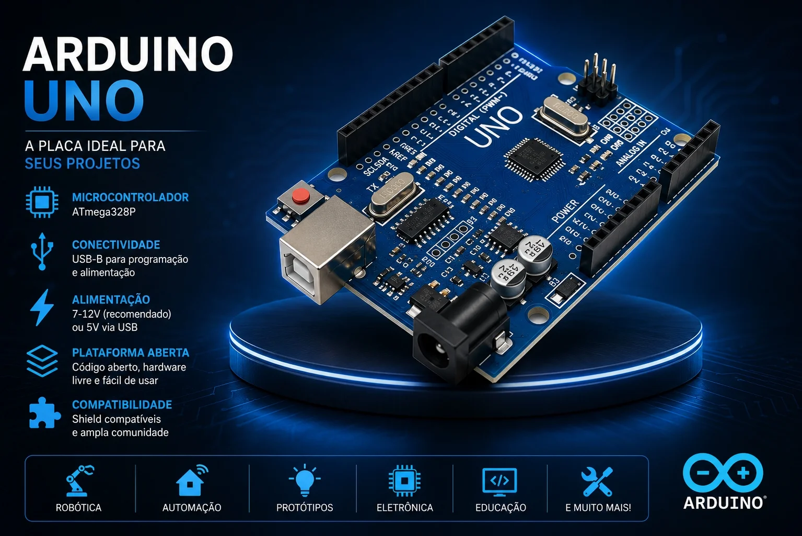

Olá! Sou estudante do sexto semestre de Engenharia de automação na FEI. Estou aprendendo desenvolvimento web e este site vai se tornar meu portfólio profissional ao longo do curso.
Tenho interesse em eletrônica, robótica e programação. Gosto de construir projetos do zero, entendendo cada parte do processo.

Site da FEI
GitHub
Documentação MDN (HTML/CSS/JS)